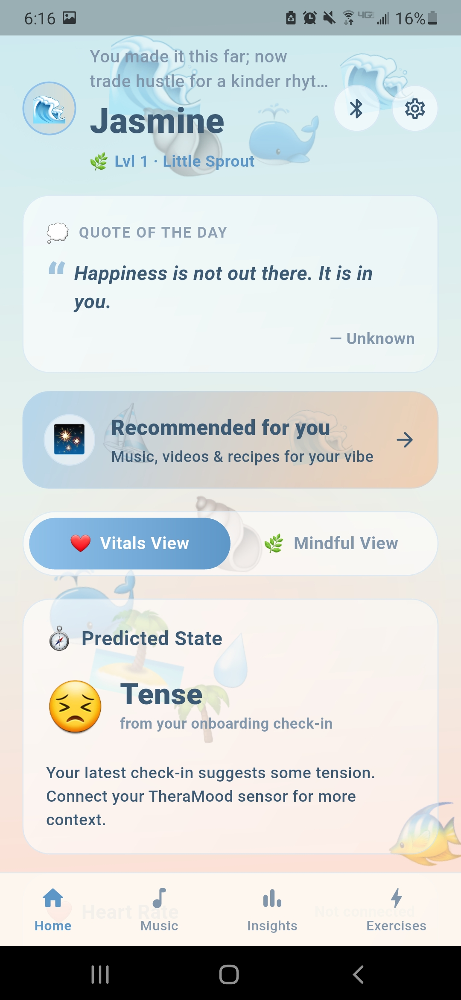
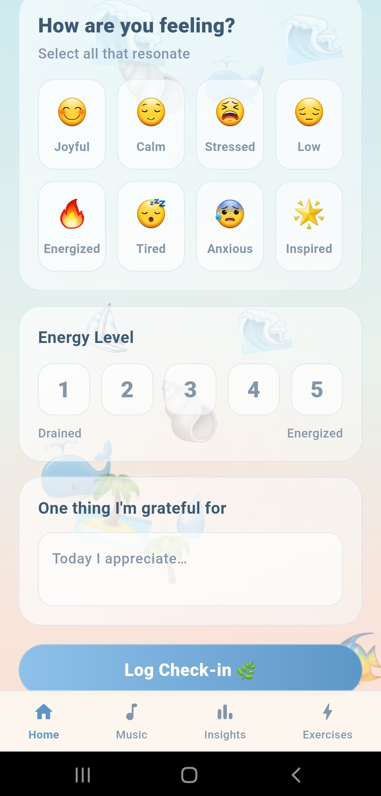
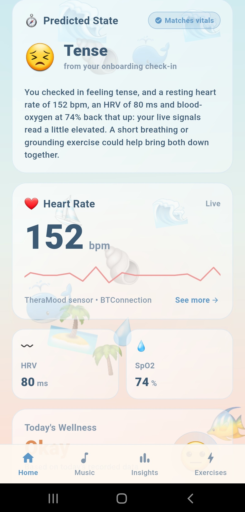
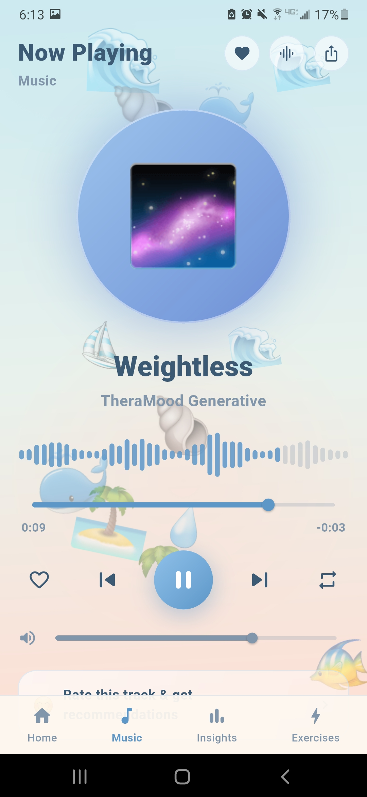
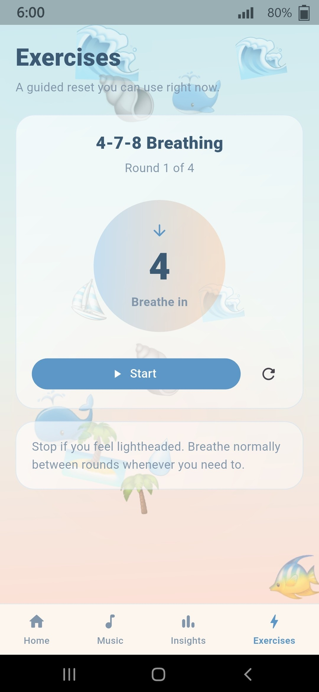
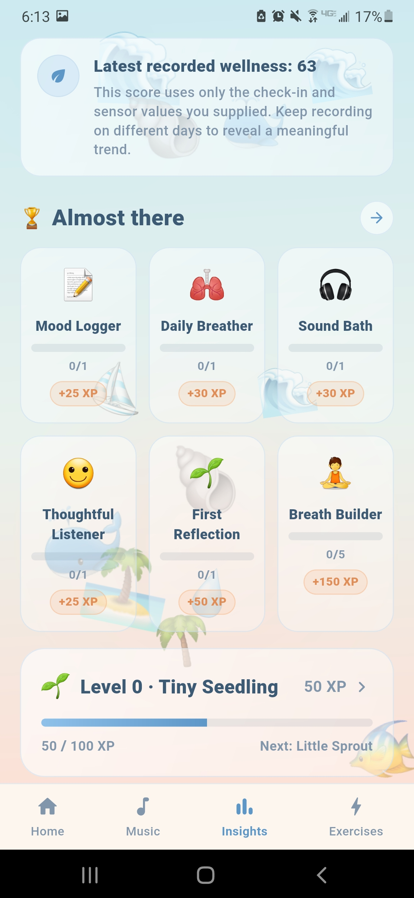
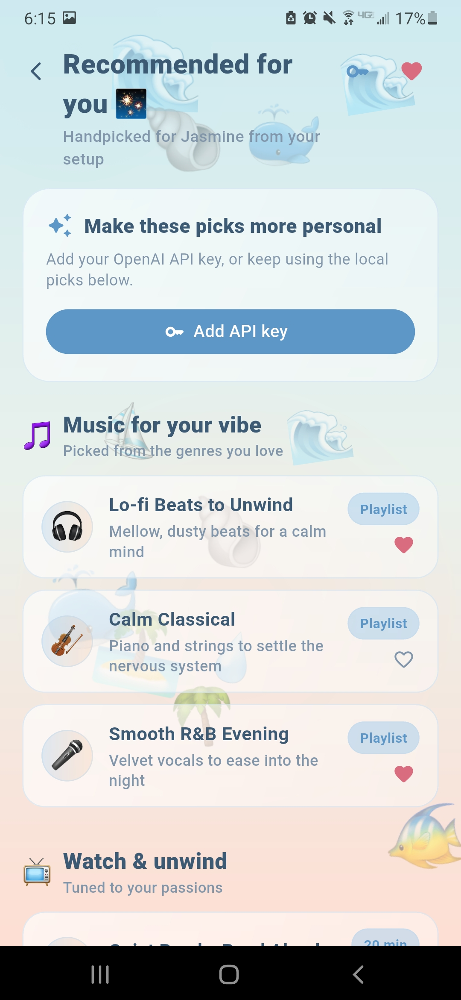
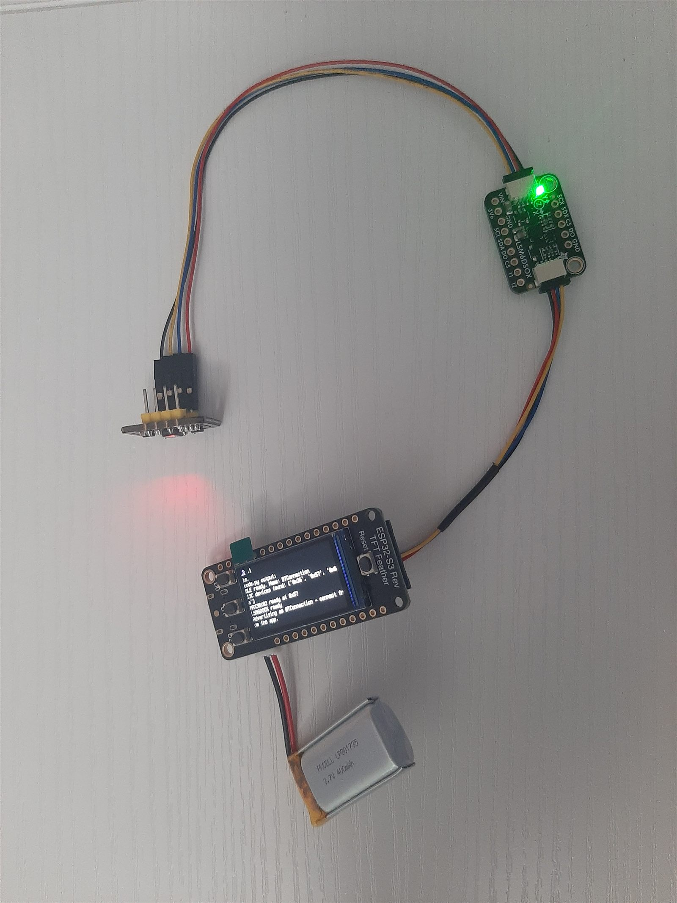
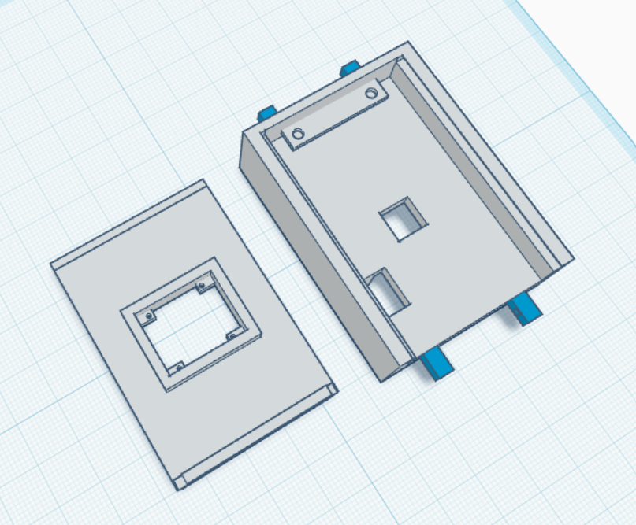

Track the night
The wristband fuses an optical pulse sensor with overnight sleep-architecture tracking — REM, deep sleep, and awakenings — while you rest.
TheraMood reads your pulse and last night's sleep to predict how you feel today — then guides you back to calm the moment stress, anxiety, or low mood appears.

Why TheraMood exists
Emotional distress hides in plain sight — in a racing pulse, a restless night, a shallow breath. TheraMood turns those invisible signals into measurable, actionable feedback.
of young adults ages 18–25 live with serious mental illness — the highest of any age group.
NIHthe ages for which suicide is the leading cause of death.
National Alliance on Mental Illnessof people with major depression never receive treatment.
High Watch Recovery CenterHow it works
The wristband fuses an optical pulse sensor with overnight sleep-architecture tracking — REM, deep sleep, and awakenings — while you rest.
An ML model correlates yesterday's sleep quality with today's emotional baseline and intra-day pulse variability to predict your emotional state in real time.
When a negative state emerges, the app responds with emotion-matched guidance — breathing for anxiety, grounding for panic, restorative routines for low-mood fatigue.
App tour
Tap through the real app — every screen below is a live screenshot from TheraMood.






Interactive demo
This is the same 4-7-8 breathing exercise TheraMood suggests when it detects anxiety. Follow the circle — in for 4, hold for 7, out for 8.
4 rounds · about a minute
Stop if you feel lightheaded — breathe normally between rounds whenever you need to.
Inside the band
Every part of TheraMood — the sensors, the case, the firmware, the app — was designed and built by hand.


The brain of the band — a Wi-Fi + BLE microcontroller with a built-in display.
Optical heart-rate and SpO₂ sensing — reads pulse, HRV and blood oxygen from the wrist.
Precision motion sensing that maps sleep cycles — REM, deep sleep and awakenings.
Custom watch enclosure with a sliding-door mechanism for easy sensor access.
Firmware streams live sensor data straight to the app — no cables, no friction.
A cross-platform companion app built in Dart, with secure cloud sync via Google Firebase.
No two minds are alike, so no two TheraMoods look alike. Onboarding shapes your backgrounds, your avatar and your recommendations — and the algorithm keeps learning from every update you make.
TheraMood transforms emotional self-awareness from subjective guesswork into measurable, real-time, evidence-based feedback.
Take the app tour